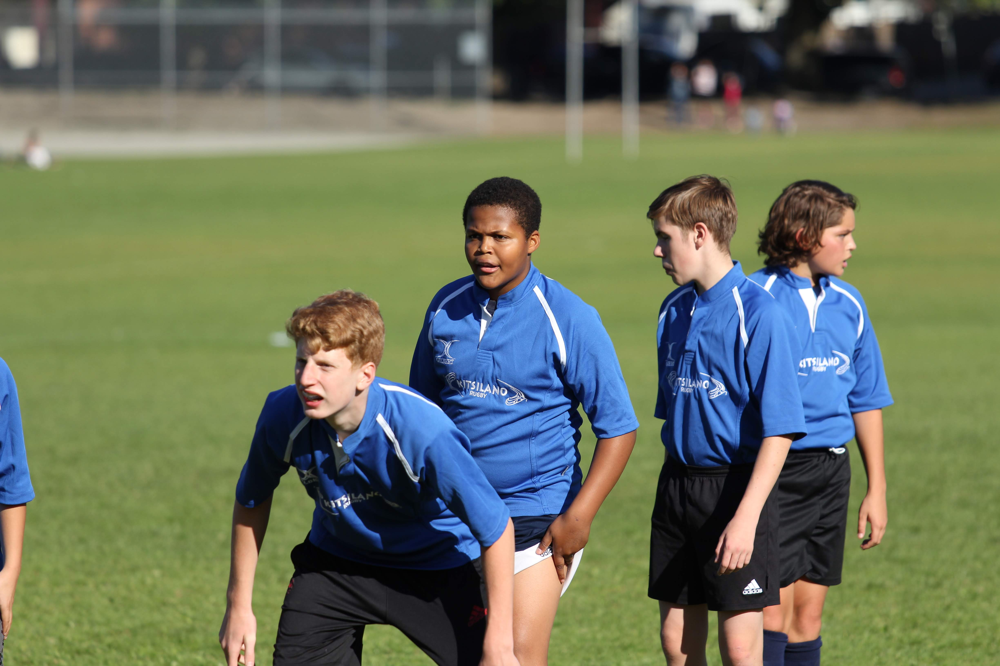

Good day, my name is Gavin I am part of the CST10 program and my favorite Hobbie is Video editing. The story behind this was a journey of some sort, as one day I was Bored so i hopped on discord to see what the boys were doing. When I Joined the call and asked Finnigan To play Apex Legends But he said he couldn't because he was video editing. This gave me an idea so i downloaded a Software called Filmora9. later i realized That this was a scam because without a membership there was a huge watermarking in the middle of the screen so i switched to the software i use today Davnci Resolve 17. This was the dream software and its completly free. I used this software to make many videos and have a satisfying hobby.
You're Probabbly wondering how i made this beautiful webside I mean look at this beauty, well i joined the CST10 corse and am enjoying it. The reason I joined this class is because my brother told me its different from the other courses And how you get to design games and create projects. I remeber looking into his room and he was happily tapping away at his keys making a website, so I walked in and asked him what he was doing and he said he was making a wabsite for his HTML unit in the CST10 program, so i asked him if I should take it and he said if you can handle the work you should defenitly take the course. He ended up not doing great Witch was an absolute reck.
